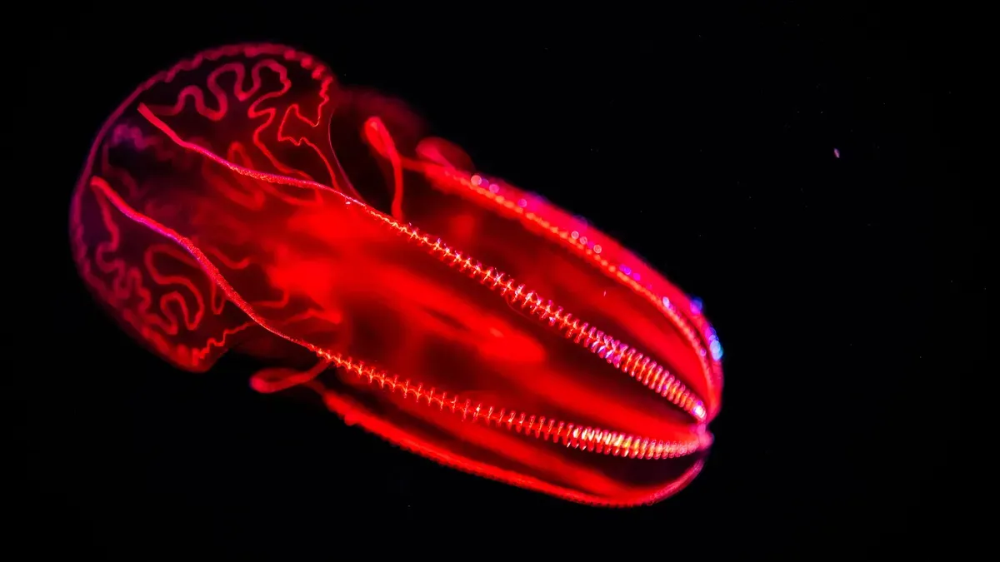
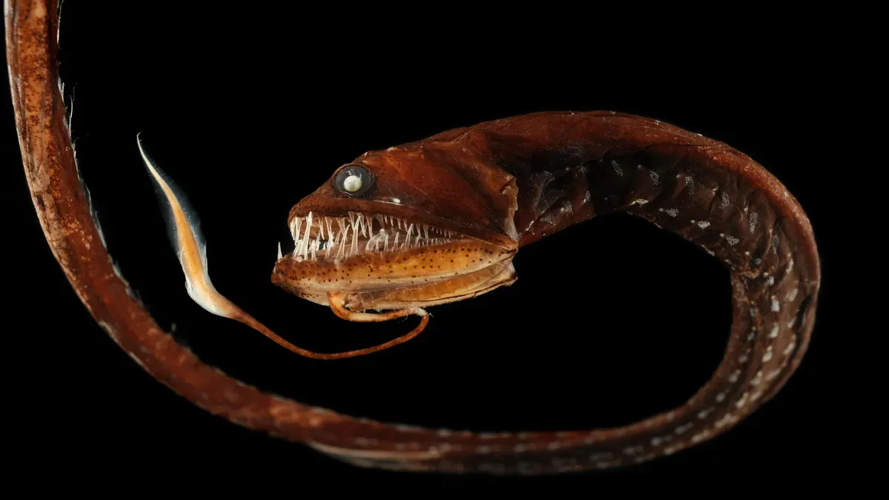
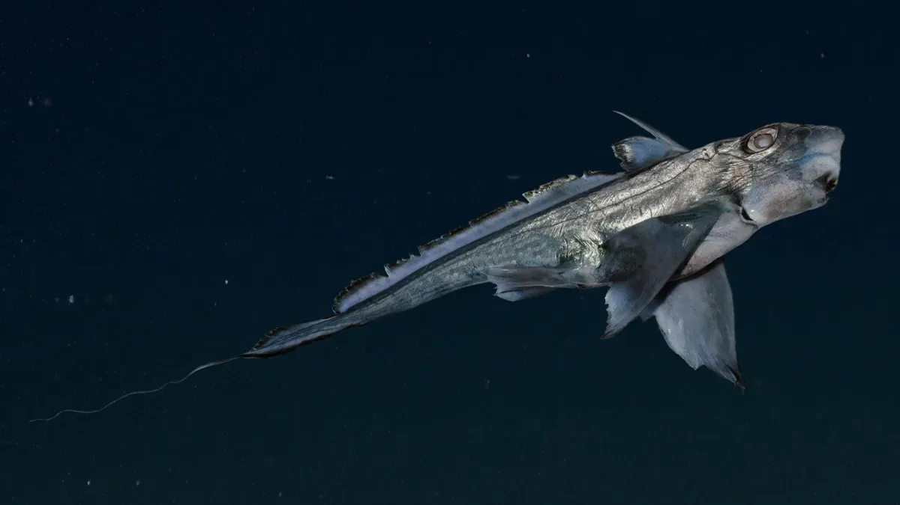
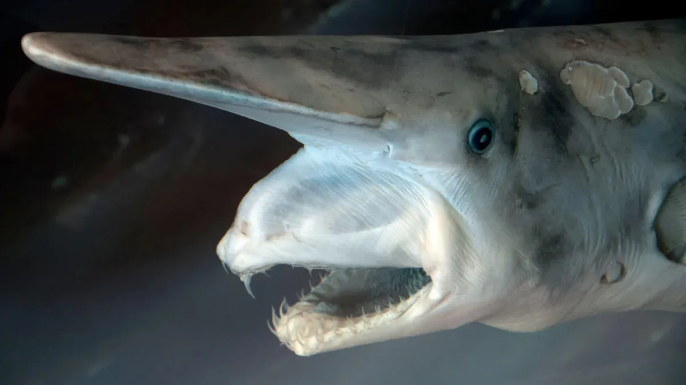

دنیای ناشناختهی اقیانوسها
اقیانوس فقط «آبِ زیاد» نیست؛ یک جهان زنده و مرموز است که نفس میکشد، حرکت میکند و حتی نور تولید میکند. بیشتر از هفتاد درصد سطح زمین را پوشانده، اما عجیبتر اینجاست که ما از سطح ماه بیشتر از کف اقیانوس خبر داریم. یعنی درست زیر پایمان، ناشناختهتر از فضا زندگی جریان دارد.
اقیانوس مثل یک ماشین غولپیکرِ تنظیمکنندهی زمین عمل میکند. گرما را جابهجا میکند، آبوهوا را شکل میدهد و بخش بزرگی از اکسیژنی که نفس میکشیم، از دل همین آبها بیرون میآید؛ نه از جنگلها، بلکه از موجودات ریزی که با چشم دیده نمیشوند. هر موجی که به ساحل میخورد، نتیجهی یک زنجیرهی پیچیده از انرژی، باد و گرانش ماه است. هیچچیز تصادفی نیست.
در اعماق، جایی که نور خورشید هرگز نمیرسد، موجوداتی زندگی میکنند که انگار از داستانهای علمی–تخیلی بیرون آمدهاند: بعضیها نور خودشان را میسازند، بعضی بدون چشم میبینند، و بعضی فشارهایی را تحمل میکنند که هر چیزی روی سطح زمین را له میکند. آن پایین، قوانین آشنا کمی تغییر میکنند.
اقیانوس همزمان آرام و خشن است. میتواند ساعتها مثل آینه صاف باشد و ناگهان به نیرویی تبدیل شود که قارهها را شکل میدهد. تاریخ بشر، تجارت، سفر، افسانهها و حتی ترسهایمان، همه به نوعی با این پهنهی آبی گره خوردهاند.
اقیانوس یادآوری میکند که زمین هنوز راز دارد؛ و ما، با همهی تکنولوژیمان، هنوز مهمان این رازها هستیم. همین ناشناختگی است که آن را اینقدر جذاب میکند: جایی که علم، شگفتی و تخیل به هم میرسند.
روی کرهی زمین پنج اقیانوس اصلی داریم؛ پنج پهنهی آبی که مثل یک سیستم واحد به هم وصلاند، اما هرکدام شخصیت، تاریخ و نقش خاص خودشان را دارند.
اقیانوس آرام
اقیانوس آرام بزرگترین و عمیقترین اقیانوس زمین است. بیشتر از نیمی از آب آزاد دنیا را در خود جا داده و عمیقترین نقطهی شناختهشدهی زمین، گودال ماریانا، در دل همین اقیانوس قرار دارد. آرام نامیده شده، اما زادگاه قدرتمندترین زلزلهها، آتشفشانها و سونامیهای جهان است. این اقیانوس نقش اصلی را در تنظیم آبوهوای جهانی بازی میکند.
اقیانوس اطلس
اقیانوس اطلس ستون ارتباطی جهان است. قارهها را به هم وصل کرده و قرنها مسیر اصلی کشتیرانی، کشف سرزمینها و تبادل فرهنگها بوده است. جریانهای نیرومندی مثل گلفاستریم در اطلس جریان دارند که اروپا را گرمتر از حد انتظار نگه میدارند. اطلس از نظر علمی و تاریخی، بیشترین مطالعه را داشته است.
اقیانوس هند
اقیانوس هند گرمترین اقیانوس دنیاست. آبهایش مستقیماً با بادهای موسمی درگیرند و زندگی میلیونها انسان در آسیا و آفریقا به رفتار همین اقیانوس وابسته است. مسیر قدیمی تجارت ادویه، طلا و فرهنگها بوده و هنوز هم یکی از مهمترین راههای حملونقل انرژی در جهان است.
اقیانوس منجمد جنوبی
اقیانوس منجمد جنوبی یا اقیانوس جنوبی، دور تا دور قارهی جنوبگان را در بر گرفته است. این اقیانوس مثل یک سپر حرارتی عمل میکند و نقش کلیدی در گردش آبهای زمین دارد. آبهای سرد و پرمواد مغذیاش باعث میشوند که یکی از غنیترین زیستبومهای دریایی جهان شکل بگیرد، با وجود سرمای شدید و شرایط خشن.
اقیانوس منجمد شمالی
اقیانوس منجمد شمالی کوچکترین و کمعمقترین اقیانوس زمین است، اما تأثیرش بسیار بزرگتر از اندازهاش است. بخش زیادی از سال پوشیده از یخ است و تغییرات آن، یکی از دقیقترین نشانههای تغییرات اقلیمی به حساب میآید. این اقیانوس مثل یک ترموستات برای نیمکرهی شمالی عمل میکند.
اقیانوسها مرز جداکنندهی قارهها نیستند؛ آنها رگهای حیاتی یک سیارهی زندهاند. آبشان در گردش دائمی است و هر تغییری در یکی، دیر یا زود به همهی زمین میرسد. همین پیوستگی است که اقیانوسها را هم ترسناک میکند و هم شگفتانگیز.
ثروت نهفته در دل آبها
اقیانوسها بزرگترین مخزن طبیعی ثروت روی زمیناند، اما نه فقط به معنی پول. ثروت اقیانوس ترکیبی است از منابع، انرژی، غذا، دارو و دانش؛ چیزهایی که اگر درست استفاده شوند، میتوانند آیندهی بشر را بسازند و اگر نادرست برداشت شوند، همان آینده را نابود کنند.
از نظر منابع غذایی، اقیانوسها ستون امنیت غذایی جهاناند. میلیاردها انسان به ماهی، جلبکها و آبزیان وابستهاند. جلبکهای دریایی بهویژه گنج پنهاناند: رشد سریع دارند، به آب شیرین و زمین کشاورزی نیاز ندارند و میتوانند غذا، خوراک دام و حتی سوخت تولید کنند. این یعنی غذایی که با طبیعت رقابت نمیکند، با آن همکاری میکند.
در بخش انرژی، اقیانوس یک نیروگاه دائمی است. جزر و مد، موجها، بادهای فراساحلی و اختلاف دمای آب سطح و عمق، همگی منابع انرژی تجدیدپذیرند. برخلاف خورشید و باد خشکی، این انرژیها قابل پیشبینیترند. نفت و گاز دریایی هنوز بخشی از ثروت اقیانوساند، اما سهم آنها در آینده کمتر و پرهزینهتر خواهد بود.
در کف اقیانوس، ثروت معدنی آرام خوابیده است. گرههای فلزی و رسوبات غنی از عناصری مثل کبالت، نیکل و عناصر کمیاب، برای فناوریهای نو، باتریها و تجهیزات پیشرفته حیاتیاند. این مواد طی میلیونها سال شکل گرفتهاند؛ یعنی منابعیاند که اگر نابود شوند، در مقیاس عمر بشر بازنمیگردند.
اقیانوسها یک گنجینهی دارویی هم هستند. بسیاری از موجودات دریایی برای بقا، ترکیبات شیمیایی پیچیده تولید میکنند. همین ترکیبات الهامبخش داروهای ضدسرطان، ضدالتهاب و آنتیبیوتیکهای جدید شدهاند.
اقیانوسها دما را تنظیم میکنند، کربن جذب میکنند و چرخهی آبوهوایی را زنده نگه میدارند. بدون این عملکردها، هیچ اقتصاد و هیچ تمدنی دوام نمیآورد. این ثروت دیده نمیشود، اما از همه حیاتیتر است.
آلودگی و تهدیدها
الودگی پلاستیکی
آلودگی پلاستیک مشهودترین نمونه از آلودگی اقیانوس ها است. بیش از ۱۰ تن از پلاستیک ها هر ساله وارد اقیانوس ها می شوند. بیشتر آنها به ذرات ریزپلاستیک تجزیه می شوند و در رسوبات ساحلی و اعماق دریا تجمع می یابند.
قطعات بزرگتر پلاستیک برای چند دهه روی آب شناور می مانند و در نهایت به عنوان مواد غلیظ گسترده وارد محل تقاطع جریان های آبی می شوند و به گردش در می آیند.
ریز پلاستیک ها مواد شیمیایی سمی چندگانه ای دارند که برای انعطاف پذیری پلاستیک ها به آنها افزوده می شود و همچنین شامل مواد ضد آب و مقاوم دربرابر شعله هستند. آنها حاوی مواد شیمیایی هستند که می توانند سرطان زا باشند و مشکلاتی را در تولد کودکان نارس و باروری ایجاد کنند.
این ذرات شیمیایی وارد زنجیره مواد غذایی می شوند و در مواد غذایی دریایی مانند ماهی ها ذخیره می شوند و هنگامی که بشر از آنها استفاده می کند در واقع میلیون ها ذرات ریزپلاستیکی و مواد شیمایی را وارد بدن خود می کند. هر چند میزان آسیب این ریزپلاستیک ها بر بدن انسان محل بحث است اما قرار گرفتن درمعرض مواد شیمیایی خطر همه انواع بیماری های ناشی از آنها را افزایش می دهد و در واقع ما اکنون ریزپلاستیک ها را در بدن خود داریم.
آلودگی ساحلی
آلودگی ناشی از ضایعات صنعتی، کشاورزی، حشره کش ها و فاضلات تعداد دفعات شکوفایی خطرناک جلبکی را که به کشند سرخ، قهوه ای و سبز معروف است افزایش می دهد. این شکوفایی های جلبیکی باعث تولیدمواد سمی و اسیدهایی می شوند که در بدن ماهی ها و صدف ها تجمع می یابند و آزادشدن آنها می تواند باعث زوال عقل ، فراموشی ، فلج و حتی مرگ سریع شوند. با استنشاق ، می توانند آسم ایجاد کنند.
آلودگی های نفتی در اقیانوس ها
این آلودگی ناشی از نشت نفت است که میکروارگانیسم های دریایی را در معرض خطرقرار می دهند. این مواد اکسیژن زمین را تامین می کنند و از انرژی خورشیدی برای تبدیل گاز دی اکسید کربن به اکسیژن استفاده می کنند و مواد شیمیایی و دیگر مواد آلوده کننده ارگانیک به آنها آسیب می رسانند. وقتی نشت نفت گسترده است تاثیر آن نیز هنگفت است.
اقیانوسها در حال از دست دادن توان خودتنظیمیاند. تهدیدها جداگانه عمل نمیکنند، بلکه همافزا هستند؛ آلودگی، گرمایش، اسیدیشدن و بهرهبرداری ناپایدار، همزمان فشار وارد میکنند.
موجودات ناشناخته
عروس دریایی شانهدار خونین شکم

عروس دریایی شانهدار خونینشکم نوعی گونه عروس دریایی است که در اعماق ۲۵۰ متر تا ۱۵۰۰ متر زندگی میکند. همانطور که از نام خونین این موجود پیداست، این عروس دریایی شانهدار دارای شکمی سرخ است که به آن در ترکیب با محیطهای تاریک کمک میکند. در عمقی که این عروس دریایی زندگی میکند، رنگ قرمز جذب شده و به رنگ سیاه ظاهر میشود و به این ترتیب این جانور برای شکارچیان نامرئی میشود.
اژدهاماهی

اژدهاماهیان گروهی از موجودات عجیب و غریب هستند که در عمق ۴۵۰۰ متری از مناطق نیمهروشن و نیمهشب اقیانوس زندگی میکنند. اژدهاماهی ماده تا ۵۰ سانتیمتر رشد میکند؛ در حالی که طول نرها بین ۵ الی ۱۵ سانتیمتر متغیر است. ماده و نر هردو دارای آروارههای شکافدار هستند، اما تنها ماده دندان نیش دارد. این دندانهای طویل و نیمهشفاف، باعث میشوند قدرت گزش اژدهاماهی از کوسه هم فراتر برود.
مادهها همچنین مجهز به ریشکهای درخشانی هستند که از چانهشان آویزان است و طعمه را جذب میکند.
ماهی خرگوشی

ماهی خرگوشی که با عنوان موشماهی هم شناخته میشود از خویشاوندان کوسهها و سفرهماهیان است. این گونه در اقیانوس اطلس شمال شرق و دریای مدیترانهی غربی پیدا میشود. ماهی خرگوشی از شناگران ضعیف است و به آهستگی در آب حرکت میکند. این ماهی از بالههای سینهای خود در عمق ۱۶۶۰ متر استفاده میکند.
دمهای بلند و تیز ماهی خرگوشی کمکی به شنای آن نمیکند. ماهی خرگوشی میتواند ستون مهرههای سمی پشت سر خود را برای ترساندن شکارچیها و ایجاد زخمی دردناک بالا ببرد. طول ماهی خرگوشی بالغ تا دم به ۱٫۵ متر میرسد و دم آن ۶۰ درصد از طول بدنش را تشکیل میدهد. ماهی خرگوشی از سختپوستها و نرمتنان تغذیه میکند و میتواند صدفهایشان را با دندان خود خرد کند.
دیوکوسه

دیوکوسه کوسهای بزرگ شبیه به بیگانگان با یک پوزهی بیلچه مانند و دهانی است که برای قاپیدن طعمه به کار میرود. سال گذشته ماهیگیرها یک دیوکوسهی ماده حامله به طول ۴٫۷ متر را از آبهای تایوان بیرون کشیدند. بااینحال حداکثر اندازهی این کوسهها نامشخص است.
دانشمندان بر این باورند که دیوکوسهها به دنبال طعمههایی مثل ماهیهای مرکب و سختپوستها هستند و با تشخیص تغییرات میدان الکتریکی آنها را پیدا میکنند. وقتی این کوسهها به اندازه کافی به طعمه نزدیک شدند، آروارههایشان به سمت بیرون پرتاب میشود تا سریع حیوان از همهجا بیخبر را ببلعند.
مارماهی گالپر

مارماهی گالپر که با عنوان مارماهی پلیکانی هم شناخته میشود، سردهای از ماهیان اعماق دریا با بدنهای باریک و دهانهای بزرگ است که برای بلعیدن طعمهها بهصورت یکجا از آن استفاده میکند. این جانور در منطقهی نیمهروشن اقیانوسهای جهان که عمق ۲۰۰ تا هزار متری را دربرمیگیرد و همچنین در منطقه نیمهشب که تا عمق هزار تا ۴هزار متری گسترده شده است، زندگی میکنند.
این مارماهی در عمق ۳۰۰ تا دوهزار متری در اقیانوس آرام شرقی زندگی میکند. طول این مارماهی به یک متر میرسد و غذای اصلی آن ماهیان کوچک هستند. این ماهی با حرکت موجی شنا میکند و دارای نوکی درخشان است که به عقیدهی دانشمندان به عنوان وسیلهی فریب زیستشبتاب برای جذب طعمه عمل میکند.